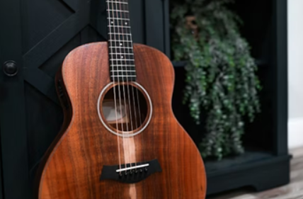
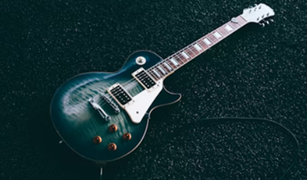

Welcome to our guitar showcase
Welcome! This website is a simple guide to one of the most popular and versatile instruments in music—the guitar. Guitars have been used in countless genres, from rock and blues to country, pop, and classical music. Whether you're new to guitars or just curious about how they work, this site will help you understand the basics.
On this website, you'll learn about the two main types of guitars: acoustic and electric. Each type has its own unique sound, design, and role in music. Explore the sections below to discover how they work and what makes each one special.
Featured Guitar Categories

Acoustic Guitars
Acoustic guitars create sound naturally through the vibration of their strings and the resonance of their hollow wooden body. They do not require an amplifier or electricity, making them simple and portable instruments. Acoustic guitars are often used in genres like folk, country, and singer-songwriter music because of their warm and natural tone.

Electric Guitars
Electric guitars use electronic pickups to convert string vibrations into an electrical signal, which is then played through an amplifier. This allows players to control their tone and use effects to create many different sounds. Electric guitars are commonly used in rock, blues, metal, and jazz music because of their versatility and powerful sound.